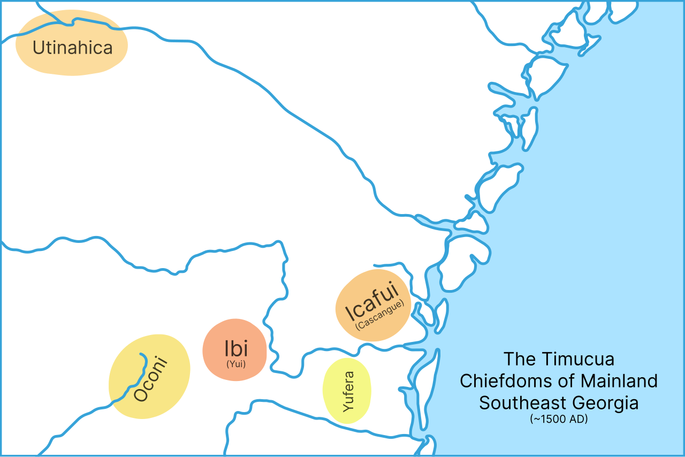
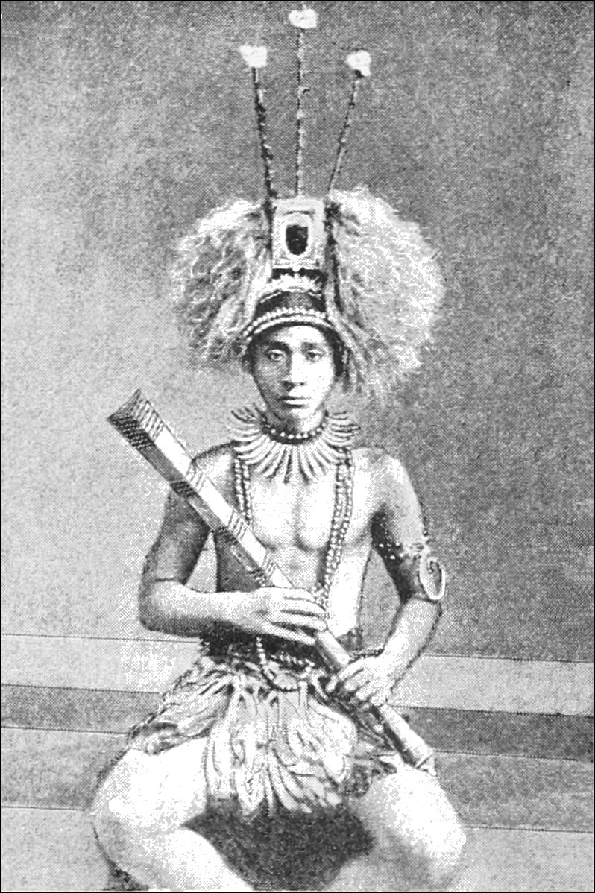
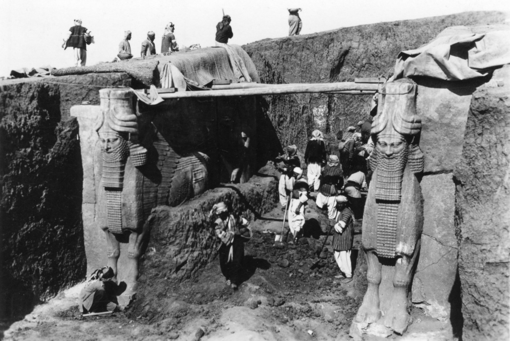

Political Systems & Social Control
Every human society has to answer the same three questions: who decides, how do we keep order, and what happens to the person who breaks the rules. What differs — enormously — is the machinery built to answer them. Some societies have no chiefs, no courts, no police, and no jails, and yet almost no one steals, because gossip, ridicule, and the fear of being left out do the work that a legal system does elsewhere. Others concentrate the power to tax, conscript, imprison, and execute in the hands of a very few. This chapter walks the whole range, from the campfire consensus of a foraging band to the tax rolls of an empire, and asks the political anthropologist's favorite question: how does anyone ever get anyone else to obey?
By the end of this chapter you can
- Describe the four classic types of political organization — band, tribe, chiefdom, and state — and explain why anthropologists treat them as ideal types rather than an evolutionary ladder.
- Distinguish power from authority, and identify Weber's three bases of legitimate authority.
- Contrast achieved leadership (the Melanesian big man) with ascribed leadership (the Polynesian chief).
- Explain how norms and sanctions maintain order, and give examples of informal social control that operate without any legal apparatus.
- Compare customary law with codified law, and distinguish mediation, arbitration, and adjudication.
- Distinguish feuding from warfare and describe real mechanisms of conflict resolution, including compensation and the moot.
- Explain how states create and maintain stratification through coercion, ideology, and law.
- Apply hegemony, structural violence, and everyday resistance to a political situation you can observe.
Section 1Types of political organization

Politics without government
Start by unlearning something. In everyday English, "politics" means elections, parties, and parliaments — the visible apparatus of a state. For anthropologists, political organization is much broader: it is whatever means a society uses to make collective decisions, allocate authority, and keep the peace. By that definition every society is political, including the many that never built a government at all. A group of thirty Ju/'hoansi foragers in the Kalahari deciding where to camp next is doing politics. So is a Nuer cattle camp working out whose herd grazes which pasture. The apparatus is invisible only if you are looking for the wrong thing.
The most widely taught framework comes from Elman Service, who in Primitive Social Organization (1962) sorted political systems into four types: band, tribe, chiefdom, and state. Morton Fried, in The Evolution of Political Society (1967), proposed a parallel scheme keyed to inequality rather than scale: egalitarian, ranked, stratified, and state societies. Learn both. Service tells you how big and how organized a system is; Fried tells you who gets more.
The four types
A band is the smallest and least formal unit — typically a few dozen people, related by kinship and marriage, subsisting by foraging, moving seasonally. Leadership is situational and persuasive: the best tracker leads the hunt, the eldest woman is heeded about plant foods, and nobody can command anyone. Decisions are made by talking until everyone agrees, or until the dissenters leave. That last option, fission, is the band's most powerful political tool. When Richard Lee lived among the Ju/'hoansi of the Dobe area in the 1960s, he found no office of chief at all; a man whom outsiders had labeled a "headman" told him flatly that all people were headmen over themselves.
A tribe is larger, usually horticultural or pastoral, and held together by pantribal sodalities — institutions that cut across local groups. Clans, age sets, and men's societies do this work. The Maasai age-set system moves young men through named grades together, creating loyalties that stretch across the whole society. Crucially, tribes still lack centralized authority. E. E. Evans-Pritchard's study of the Nuer of the upper Nile, in what is now South Sudan, The Nuer (1940), described a segmentary lineage system in which groups merge to face a more distant enemy and split again when the threat passes: lineages that feud with each other on Tuesday unite against an outside lineage on Wednesday. Order emerges from balanced opposition rather than from a ruler.
A chiefdom introduces something new and consequential: a permanent office of leadership, filled by inheritance, that outranks everyone else even when its current occupant is unimpressive. Chiefdoms are ranked societies — every lineage sits somewhere on a ladder of prestige relative to the chiefly line. The chief collects goods and gives them out again at feasts, a pattern called redistribution that both feeds people and advertises the chief's centrality. Polynesia is the classic laboratory: in Hawai'i, Tonga, and Samoa, chiefs held sacred power (mana) hedged by ritual prohibitions (tapu). In North America, the Mississippian centers of the Southeast, the Natchez, and the Timucua polities were chiefdoms, as were the Northwest Coast societies whose potlatch feasts validated rank through spectacular giving.
A state adds centralized administration, permanent specialized institutions, and, in Max Weber's famous phrase, a claim to a monopoly on the legitimate use of force. States are stratified: access to basic resources is unequal by law, not merely by prestige. They typically appear alongside intensive agriculture, dense population, record-keeping, standing military force, and taxation — in Mesopotamia, Egypt, the Indus, Shang China, Mesoamerica, and the Andes, where the Inca state of Tawantinsuyu ran a labor-tax system (mit'a) and a road network across thousands of kilometers using knotted-cord quipu records rather than writing as we usually define it.
| Type | Typical subsistence | Scale | Leadership | Decisions & order | Ethnographic examples |
|---|---|---|---|---|---|
| Band | Foraging | Tens | Informal, situational, achieved; no office | Consensus; conflict solved by talk, ridicule, or moving away | Ju/'hoansi, Hadza, Inuit, Mbuti |
| Tribe | Horticulture, pastoralism | Hundreds to thousands | Big man, headman, council of elders; influence, not command | Sodalities, age sets, lineages; feud regulated by kin | Nuer, Yanomami, Enga, Maasai, Hopi |
| Chiefdom | Intensive horticulture, fishing, agriculture | Thousands to tens of thousands | Ascribed hereditary office; ranked lineages | Chief adjudicates; redistribution at feasts | Polynesia, Natchez, Timucua, Northwest Coast |
| State | Intensive agriculture, industry | Tens of thousands to millions | Bureaucracy, ruler, permanent officials | Codified law, courts, police, army, taxation | Inca, Egypt, Shang, Dahomey, modern nation-states |
- Political organization is any means of making collective decisions and maintaining order — every society has one, with or without a government.
- Service: band, tribe, chiefdom, state. Fried: egalitarian, ranked, stratified, state.
- Bands and tribes have achieved, non-coercive leadership; chiefdoms add a permanent ascribed office; states add bureaucracy and a monopoly on legitimate force.
- The types are analytic ideal types, not stages — treating them as a ladder smuggles in a discredited unilineal evolutionism.
Section 2Power and authority

Power, authority, and legitimacy
The sociologist Max Weber gave anthropology its sharpest tool here. Power is the ability to make people do what you want even against their will — it can rest on nothing but force. Authority is power that people accept as rightful. The difference is legitimacy, and legitimacy is not a mood; it is a claim that something has made credible. Weber identified three such somethings. Traditional authority rests on inherited custom: this person leads because their line has always led. Charismatic authority rests on extraordinary personal qualities attributed to an individual — prophets, revolutionaries, founders. Rational-legal authority rests on impersonal rules: the office carries the power, the officeholder is temporary, and a bureaucrat who exceeds the rules is acting illegitimately even if the results are good.
A hard question follows: can anyone hold authority and no power at all? Among the Nuer, the leopard-skin chief was a ritual mediator who could offer sanctuary to a killer and press the two sides toward a settlement in cattle. He had no army, no jail, and no ability to compel a single person. His only leverage was the threat of a curse and the community's shared wish to see the bloodshed end. Evans-Pritchard's point was that in a society with no state, order can be produced by a man everyone respects and no one has to obey.
Earning it versus inheriting it
Marshall Sahlins drew the classic contrast in a 1963 essay, "Poor Man, Rich Man, Big-Man, Chief." The Melanesian big man holds achieved status. He builds a following one person at a time by working hard, marrying strategically, raising pigs, and giving them away in competitive exchange — the moka of Mount Hagen, described by Andrew Strathern, in which a man's prestige rises with what he hands over and the debts he thereby creates. His influence is personal, laborious, and mortal: it dies with him, and it evaporates if his followers drift away. The Polynesian chief, by contrast, holds ascribed status. He does not build a following; he inherits one, along with a title, a genealogy reaching to the gods, and the right to demand tribute. A lazy big man is nobody. A lazy chief is still the chief.
Where power is inherited and sacred, its display becomes a form of governance in itself. Clifford Geertz argued in Negara: The Theatre State in Nineteenth-Century Bali (1980) that the Balinese kingdoms were not primarily machines for taxing and coercing; their central activity was mass ritual, and the state existed to stage the spectacle that made the ruler an exemplary center of the cosmos. Power there was less a matter of what the king could force than of what the ceremony could make people believe about the order of the world — a reminder that the symbolic and the political are not separate departments. It is the same insight Geertz applied to the Balinese cockfight: a public performance can be an argument about status that everyone present understands.
| Leader type | Status | How power is gained | How power is held | Limits |
|---|---|---|---|---|
| Band headman | Achieved, informal | Skill, generosity, judgment, age | Persuasion and example only | Cannot command; leveling mechanisms punish arrogance |
| Big man (Melanesia) | Achieved | Feast-giving, exchange, debt creation (moka) | Continuous redistribution to followers | Personal, unstable, ends at death |
| Chief (Polynesia) | Ascribed, hereditary | Birth into a senior line; sacred mana | Tribute, redistribution, ritual prohibition (tapu) | Bounded by custom and by rival chiefly lines |
| State ruler or official | Ascribed or appointed | Inheritance, election, appointment, conquest | Law, taxation, bureaucracy, coercive force | Constitutions, factions, rebellion, legitimacy crises |
- Power is the ability to compel; authority is power recognized as legitimate.
- Weber's three bases of legitimate authority: traditional, charismatic, and rational-legal.
- The big man earns influence through exchange and loses it at death; the chief inherits an office that outlives its holder.
- Authority can exist without coercion (the Nuer leopard-skin chief), and spectacle itself can be a technology of rule (Geertz's theatre state).
Section 3Social control and law
Norms and sanctions
Social control is the whole set of processes that get people to conform to the expectations of their group. It rests on norms: shared rules about how one ought to behave. William Graham Sumner's old distinction, drawn in Folkways (1906), still earns its keep. Folkways are norms of ordinary courtesy whose violation makes you odd — eating with the wrong hand, standing too close. Mores are norms felt to be morally serious, whose violation makes you dangerous or disgusting — incest, treachery, killing a kinsman. Both are enforced by sanctions, which come in four flavors: positive or negative, formal or informal. A medal is a positive formal sanction; a prison sentence is a negative formal one; a warm welcome is positive and informal; being talked about behind your back is negative, informal, and often the most effective of the four.
Most order, in most societies, most of the time, comes from the informal side. Gossip, ridicule, shaming, avoidance, and the withdrawal of cooperation are quietly ferocious in a small community where you cannot move away and everyone you will ever need is watching. Accusations of witchcraft do similar work. E. E. Evans-Pritchard's Witchcraft, Oracles and Magic among the Azande (1937) showed that Azande witchcraft beliefs were not random superstition but a coherent way of explaining particular misfortune — why this granary fell on this man on this afternoon — and, in practice, a system that made it dangerous to be conspicuously stingy, envious, or antisocial, because those were the people who got named. Belief in witches punished exactly the behavior that frays a community.
Some societies formalize this without building a court. Among the Tolai of New Britain, the masked Duk-Duk society appeared to collect debts, enforce obligations, and impose fines; the mask depersonalized the enforcement so that the sanction came from the society itself rather than from a neighbor with a grudge. Among Inuit groups, a grievance could be settled by a song duel, in which the disputants traded composed insults before an audience whose laughter decided the winner — a genuine legal proceeding whose only penalty was public opinion.
What makes something law
Bronislaw Malinowski attacked the idea that societies without courts have no law. In Crime and Custom in Savage Society (1926) he argued that Trobriand order rested on reciprocity: a coastal fisherman delivers to his inland partner because he will need garden produce traded back, and the mutual dependence built into the exchange is what binds the obligation. Law, on this reading, is what people are actually held to, not what a legislature has written down. The comparative study of law took a further step with Karl Llewellyn and E. Adamson Hoebel, whose The Cheyenne Way (1941) reconstructed Cheyenne law from remembered cases — actual disputes and how they were settled — rather than from abstract rules. Hoebel later proposed in The Law of Primitive Man (1954) that a norm counts as legal when its breach is met by the socially recognized application of force by someone with the recognized privilege to apply it.
Anthropologists therefore distinguish customary law — unwritten, precedent-based, embedded in kinship and community — from codified law, which is written, enforced by specialized officials, and typically the possession of states. The two do not simply replace one another. Legal pluralism is the ordinary condition of the modern world: village elders, religious tribunals, customary councils, and national courts all operate over the same people at once, and litigants shop among them, choosing the forum most likely to give them what they want.
| Sanction | Type | Where you see it | Force behind it |
|---|---|---|---|
| Praise, hospitality, a good reputation | Positive, informal | Every society | Desire for belonging and esteem |
| Medal, title, promotion, bonus | Positive, formal | States, institutions, chiefdoms | Recognized authority |
| Gossip, ridicule, shaming, avoidance, ostracism | Negative, informal | Bands and small communities especially | Public opinion; risk of isolation |
| Witchcraft accusation | Negative, informal but institutionalized | Azande and many others | Shared belief plus community consensus |
| Fine, corporal punishment, exile, imprisonment, execution | Negative, formal | Chiefdoms and states | Codified law and coercive institutions |
- Norms (folkways and mores) are enforced by sanctions that are positive or negative, formal or informal.
- Informal control — gossip, ridicule, ostracism, witchcraft accusation — carries most of the load in small-scale societies.
- Malinowski located law in reciprocity; Llewellyn and Hoebel reconstructed it from cases; Hoebel defined law by the legitimate application of force.
- Customary and codified law coexist as legal pluralism almost everywhere today.
Section 4Conflict
Feud, raid, and war
Anthropologists separate three things that English tends to lump together. A feud is protracted hostility between kin groups within the same society, driven by the obligation to avenge a wrong; it is bounded by shared norms and usually ends in a settlement rather than a conquest. A raid is a short, limited expedition to take something specific — livestock, goods, captives. Warfare is organized, socially sanctioned armed conflict between political communities, and its intensity scales with political complexity: bands skirmish, tribes fight seasonally over land and honor, states conquer and annex.
The Nuer feud is the textbook case because Evans-Pritchard showed exactly how a society with no police keeps a killing from tearing it apart. A homicide obligated the victim's lineage to retaliate. The killer took refuge with the leopard-skin chief, who then shuttled between the groups until the dead man's kin agreed to accept blood wealth — historically some forty head of cattle — in place of a life. Notice how the cattle work: they are not merely a fine but the means by which the dead man's kin will obtain a wife whose sons will carry his name. The compensation literally replaces the person.
In the New Guinea highlands, the Dani of the Grand Valley practiced a form of ritualized warfare, described by Karl Heider, in which arranged battles between alliances were fought on known ground with an etiquette of their own, and were understood as an obligation owed to the ghosts of the slain rather than a campaign to seize territory. Among the Enga, Mervyn Meggitt's Blood Is Their Argument (1977) traced clan fighting to intense competition for garden land as population pressed against a fixed resource. Enga conflict resolution is as elaborate as Enga conflict: fighting closes with negotiated compensation paid in pigs and valuables, a ceremony that reopens exchange between enemies and thereby restores the relationship the fighting had suspended.
Is warfare human nature?
This is where anthropology has been most contentious, and the caution matters. Napoleon Chagnon's work on the Yanomami of Venezuela and Brazil, published as Yãnomamö: The Fierce People (1968), presented raiding and revenge as central to Yanomami life; in a separate and much-disputed 1988 study he further argued that men who had killed left more offspring than those who had not. The book became one of the best-selling ethnographies ever written and one of the most fiercely disputed. R. Brian Ferguson, in Yanomami Warfare: A Political History (1995), argued from the historical record that much of the fighting Chagnon observed had been intensified by the contact situation itself — competition over steel tools, mission stations, and trade goods introduced from outside — and that a snapshot taken during that disruption should not be read as timeless human nature. Yanomami people have since objected publicly to being labeled "fierce," and their objection is itself an ethnographic fact worth taking seriously. The methodological lesson generalizes: what an ethnographer records in a single decade may be a product of the very forces that brought the ethnographer there.
The comparative record does not support an inevitable species-wide bellicosity either. Some societies are strikingly nonviolent — Robert Dentan described the Semai of peninsular Malaysia as a people whose ideal of nonaggression was so strong that even open confrontation was avoided. Douglas Fry and others have compiled the ethnographic and archaeological evidence for peaceful societies and argue that what is genuinely universal is not violence but dispute-resolution machinery.
Making peace
Every society has procedures for stopping a fight, and they sort into a few recognizable forms. In mediation, a neutral third party helps the disputants reach their own agreement but cannot impose one — the leopard-skin chief again. In arbitration, both sides agree in advance to accept a third party's decision. In adjudication, an authority with the power to enforce hands down a binding judgment, which is what a state court does. James Gibbs's account of the Kpelle moot in Liberia — the "house palaver" — showed a fourth possibility: an informal hearing among kin and neighbors whose goal is not to determine a winner but to repair the relationship, with an apology and a token gift closing the matter. Gibbs called it therapeutic, and it is the ancestor of what is now marketed as restorative justice.
| Form of conflict | Who fights | What it is about | How it typically ends |
|---|---|---|---|
| Dispute | Individuals or households | Property, insult, marriage, adultery | Talk, mediation, moot, apology and gift |
| Feud | Kin groups within one society | Revenge for a killing or grave wrong | Compensation (blood wealth) accepted through a mediator |
| Raid | Small party from a local group | Cattle, goods, captives, revenge | Retaliation, then a negotiated settlement |
| Warfare | Political communities | Land, resources, obligation to the dead, conquest | Truce, compensation ceremony, alliance, or annexation |
- Feud is internal and revenge-driven; raiding is limited and acquisitive; warfare is organized conflict between political communities and intensifies with political complexity.
- The Nuer settled homicide through a mediator and blood wealth; the Enga close clan fighting with negotiated compensation that restores exchange.
- The Yanomami debate (Chagnon versus Ferguson) warns that observed violence may reflect the contact situation rather than an unchanging cultural essence.
- Mediation, arbitration, adjudication, and the reparative moot are the recurring machinery of peacemaking.
Section 5Political inequality

From ranked to stratified
Morton Fried's key move was to see that ranking and stratification are different animals. In a ranked society there are fewer positions of high prestige than there are people qualified to fill them, but everyone still has access to the resources needed to live — a Polynesian commoner had land. In a stratified society that access itself is unequal: some people own or control the means of production and others must obtain their living through them. Stratification is the threshold at which inequality stops being a matter of honor and becomes a matter of survival, and the state is the political form that arises to defend it.
How does a state hold a stratified order in place? Through several levers working together. Coercion: a standing army, police, prisons, and the claimed monopoly on legitimate violence. Extraction: taxation, tribute, labor service, rents. Law: codified rules and courts that define property and criminalize its redistribution. And ideology: the story that makes the arrangement look natural, ancient, sacred, or simply inevitable. The Assyrian palace gate flanked by colossal winged bulls, the Egyptian pyramid, the Inca stonework at Cusco, the Balinese royal cremation — these are not decoration. Monumental architecture and state ritual convert an argument about who should rule into a fact you cannot walk around.
Class, caste, and the politics of race
Stratified systems come in open and closed varieties. A class system is relatively open: position is partly achieved, mobility is possible in principle, and the boundaries are blurry — though anthropologists working in industrial societies have repeatedly documented how much less mobility exists in practice than the national ideology advertises. A caste system is closed: status is ascribed at birth, marriage is endogamous, and occupation and ritual standing are hereditary. Louis Dumont's Homo Hierarchicus (1966) analyzed the Indian caste system as an order built on the opposition of purity and pollution; later scholars, including Nicholas Dirks, argued that Dumont underplayed politics and economics and that British colonial census-taking and administration hardened and standardized categories that had been considerably more fluid.
Race belongs in this section rather than in a chapter on biology. Franz Boas and his students spent careers dismantling the claim that humanity divides into ranked biological races with corresponding capacities; genetic evidence has only confirmed that racial categories do not carve up human variation consistently. Race is nonetheless intensely real as a political fact — a socially constructed classification with enormous consequences for who is policed, employed, housed, and believed. That is the anthropological point exactly: a category can be biologically incoherent and politically decisive at the same time. Colonial administrations demonstrated this at scale, converting flexible identities into fixed, governable ones through indirect rule, identity documents, and the census — the machinery of dividing the ruled among themselves.
Consent, and its refusal
States cannot afford to coerce everyone all the time; it is expensive. Antonio Gramsci's concept of hegemony names the cheaper alternative: rule that works because the subordinated have come to accept the dominant group's worldview as ordinary common sense. Hegemony is what makes an unequal arrangement feel like the weather. Structural violence names the result: suffering inflicted not by an identifiable attacker but by the ordinary operation of political and economic structures that put some people, predictably and repeatedly, in harm's way. The peace researcher Johan Galtung coined the phrase in 1969; the medical anthropologist Paul Farmer made it central to the discipline, using it to explain why disease, hunger, and early death track so closely with poverty and racism rather than falling at random.
Which is not the end of the story, because subordination is rarely total. James C. Scott, in Weapons of the Weak (1985), lived in a Malaysian village and documented what peasants do when open revolt would be suicidal: foot-dragging, feigned ignorance, pilfering, slander, sabotage, false compliance. In Domination and the Arts of Resistance (1990) he called the offstage critique that accompanies these tactics the hidden transcript — what people say about the powerful when the powerful are not listening — and in The Art of Not Being Governed (2009) argued that upland peoples of Southeast Asia had for centuries chosen crops, settlement patterns, and social forms specifically to stay beyond the reach of lowland states. Read alongside Clastres, this is political anthropology's most useful corrective: evading the state is a political strategy, not a failure to invent one.
| Mechanism | How it works | Concrete forms |
|---|---|---|
| Coercion | Monopolizes legitimate force | Army, police, prisons, execution, surveillance |
| Extraction | Moves surplus upward | Taxes, tribute, rent, labor service (the Inca mit'a) |
| Law | Defines and defends property and status | Codified law, courts, land title, criminalization |
| Ideology | Makes the arrangement seem natural or sacred | Divine kingship, monumental architecture, state ritual, schooling, media |
| Classification | Divides the governed and fixes their status | Caste, census categories, racial classification, identity documents |
- Ranked societies restrict prestige; stratified societies restrict access to basic resources — that threshold is where states appear.
- States maintain inequality through coercion, extraction, law, ideology, and official classification.
- Class is relatively open and caste is closed; both are cultural systems hardened by colonial administration, and race likewise is a political construct with real effects rather than a biological division — a core Boasian finding.
- Hegemony and structural violence explain quiet domination; everyday resistance and the hidden transcript explain its limits.
The chapter in one breath
- Every society has political organization — a way to make decisions and keep order — even when it has no government.
- Service sorted political systems into band, tribe, chiefdom, state; Fried into egalitarian, ranked, stratified, state. Both are ideal types, not rungs on a ladder.
- Power is the ability to compel; authority is legitimate power, and Weber grounded legitimacy in tradition, charisma, or rational-legal rules.
- The Melanesian big man earns a personal following through exchange; the Polynesian chief inherits an office that outlasts him.
- Norms are enforced by sanctions, and in small-scale societies the informal ones — gossip, ridicule, ostracism, witchcraft accusation — do most of the work.
- Customary law rests on reciprocity and precedent (Malinowski; Llewellyn and Hoebel); codified law belongs to states; legal pluralism is now the norm.
- Feud, raiding, and warfare differ in scale and purpose, and are resolved by compensation, mediation, arbitration, adjudication, or the reparative moot.
- States create and defend stratification through coercion, extraction, law, ideology, and classification — and people answer with everyday resistance and the hidden transcript.
ReferenceWords worth knowing
A quick reference for the terms in this chapter — skim it now, or circle back whenever a word trips you up.
- Adjudication
- Settlement in which an authority with the power to enforce its ruling hands down a binding judgment, as a state court does.
- Arbitration
- Settlement in which disputants agree in advance to accept the decision of a third party they have chosen.
- Authority
- Power that is recognized as legitimate by those subject to it, and therefore obeyed without constant coercion.
- Band
- The smallest political unit: a small, kin-based, usually foraging group with informal, non-coercive leadership and decision by consensus.
- Big man
- A Melanesian leader whose influence is achieved through generosity, feast-giving, and competitive exchange, and which ends with his death.
- Blood wealth
- Compensation, classically in livestock, paid by a killer's kin group to the victim's kin group to forestall or end a feud.
- Caste
- A closed system of stratification in which status is ascribed at birth, marriage is endogamous, and occupation and ritual standing are hereditary.
- Chiefdom
- A ranked political system with a permanent, usually hereditary office of chief who adjudicates disputes and redistributes goods.
- Codified law
- Written law enacted and enforced by specialized institutions such as courts, police, and legislatures; characteristic of states.
- Customary law
- Unwritten, precedent-based rules embedded in kinship and community practice and enforced without a formal legal apparatus.
- Everyday resistance
- Scott's term for the low-risk tactics — foot-dragging, feigned ignorance, pilfering, false compliance — used by subordinate people when open revolt would be too dangerous.
- Feud
- Prolonged retaliatory hostility between kin groups within the same society, driven by the obligation to avenge a wrong.
- Hegemony
- Gramsci's term for domination achieved through consent, when a ruling group's worldview is accepted as ordinary common sense.
- Hidden transcript
- Scott's term for the offstage critique that subordinate people voice among themselves but never in front of the powerful.
- Legal pluralism
- The coexistence of several legal orders — customary, religious, and national — over the same population, among which litigants may choose.
- Leveling mechanism
- A social practice — ridicule, insult, obligatory sharing — that suppresses displays of superiority and keeps a group egalitarian.
- Mediation
- Settlement in which a neutral third party helps disputants reach their own agreement but cannot impose one.
- Moot
- An informal community hearing, such as the Kpelle house palaver, whose aim is to repair a relationship rather than to produce a loser.
- Norm
- A shared expectation about how one ought to behave; folkways govern etiquette, while mores carry serious moral weight.
- Pantribal sodality
- An association — a clan, age set, or men's society — that cuts across local residential groups and knits a tribe together without any central ruler.
- Political organization
- The means by which a society makes collective decisions, allocates authority, and maintains social order.
- Power
- The ability to make others act as one wishes, whether or not they consent.
- Redistribution
- An exchange pattern in which goods flow to a central figure such as a chief and are handed out again, typically at feasts, reinforcing that figure's centrality.
- Sanction
- A reward or penalty that enforces a norm; sanctions may be positive or negative and formal or informal.
- Segmentary lineage system
- A political structure, classically Nuer, in which descent groups merge against a more distant opponent and split apart again afterward.
- State
- A centralized political system with permanent bureaucracy, codified law, taxation, and a claimed monopoly on the legitimate use of force.
- Stratification
- Institutionalized inequality of access to basic resources, as opposed to mere inequality of prestige.
- Structural violence
- Harm produced by the ordinary workings of political and economic structures rather than by an identifiable attacker; coined by Johan Galtung and developed in anthropology by Paul Farmer.
- Tribe
- A political system larger than a band, usually horticultural or pastoral, integrated by pantribal sodalities but still lacking centralized coercive authority.
- Warfare
- Organized, socially sanctioned armed conflict between separate political communities, as distinct from the internal revenge cycle of a feud.